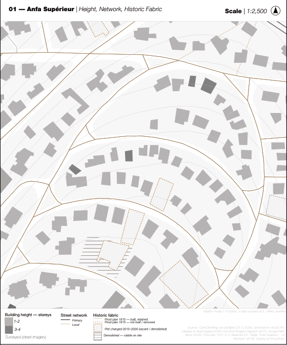

الدار البيضاء
CASA
/
BLANCA
URBAN DNA — أطلس الأنسجة
Explore
↗
1.3 · CITY ID
01
Density
↗
02
Morphology
↗
03
City centre
↗
04
Climate
↗
05
Human dimension
↗
06
Historical development
↗
07
Height / 3D
Later
←
Explore
02
Historical development
↗
Morphology
00
Morphology
↗
02
Street networks
↗
03
Where mapping thins out
↗
04
Four reference studies
↗
05
Building register
↗
06
Compare samples
↗
07
Aerial / image evidence
↗
Worktable
Layers
Saved samples
Stack windows
Arrange side by side
Export SVG ↓
GeoJSON ↓
Method & sources
Play sequence
Next analysis →
+
−
↙↗
◐
A□
B□
Loading data…
EN
—
↑ N
WGS84 / UTM 29N
↔
READING THE FABRIC
Preparing the supplied datasets…
Enter
الدار البيضاء
CASA / BLANCA
URBAN DNA

Enter the atlas ↗
Skip introduction